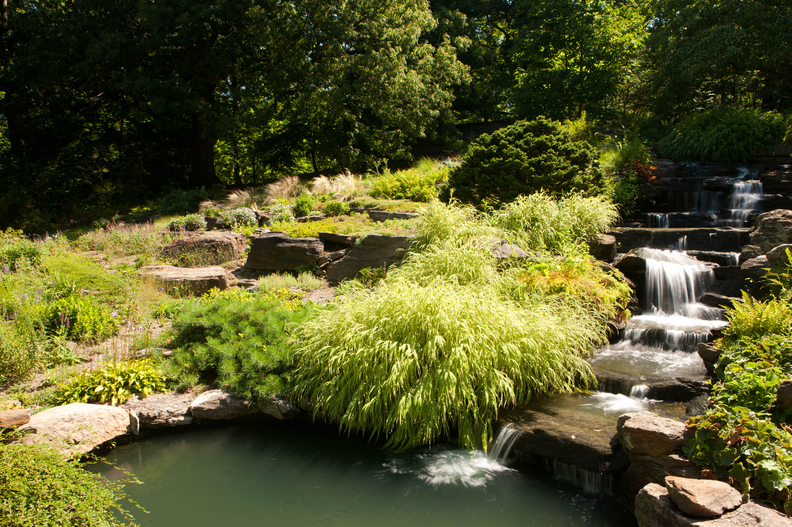

Rock botanical gardens are fascinating places where the tough beauty of rocks and the determination of alpine and arid plants shine. These specialized gardens mimic the harsh environments where rocks dominate, and only the hardiest plants survive
Besides being educational and environmental showcases, rock botanical gardens also serve as research centers. Scientists study how these plants interact with their rocky surroundings, expanding our knowledge of plant ecology and adaptations, which helps us understand these unique ecosystems better.Additionally, these gardens play a crucial role in plant conservation.

The main mission of rock botanical gardens is to celebrate and protect the remarkable adaptations of plants that live among rocks. These plants have evolved to thrive in rocky terrain, where soil is scarce and conditions are harsh. These gardens showcase their ability to grow in such challenging circumstances.
One interesting aspect of rock gardens is the variety of rock types and the diverse plants they support. You can explore landscapes that resemble alpine areas with rocky outcrops, or you can wander through desert-like environments. These gardens often feature a stunning collection of alpine plants, succulents, and cacti, showing the beauty and tenacity of these plants.
Rock botanical gardens offer a unique chance to connect with the captivating world of plants that thrive among rocks. Whether you're a plant enthusiast, a nature lover, or simply looking for a peaceful escape, these gardens provide a space to explore, appreciate, and find inspiration in the incredible adaptations of rock-dwelling plants. They remind us of the importance of preserving the diversity of life and the marvels of nature's determination to thrive. They cultivate and protect rare, endangered rock-loving plant species, acting as a form of insurance against their potential extinction due to habitat destruction and climate change. Moreover, these gardens provide visitors with a place of peace and wonder. The contrast between the tough landscapes and delicate, colorful plants creates a striking environment. It's an opportunity to appreciate the resilience and beauty of life in challenging conditions.